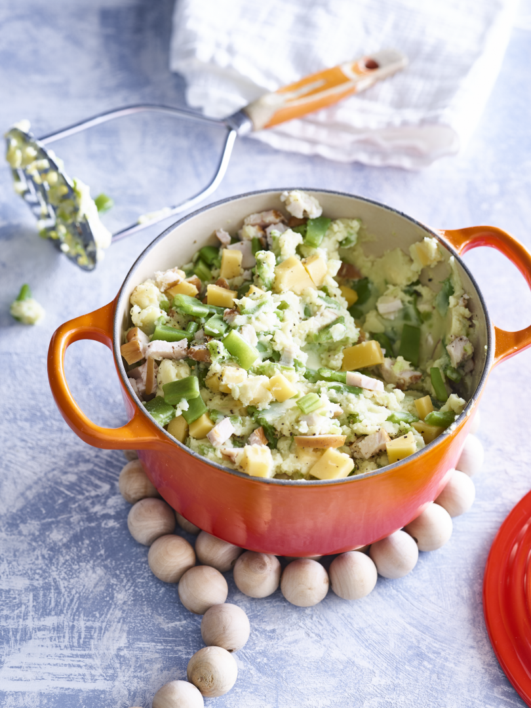

Snijbonenstamppot met kip en kaas

Omschrijving
Sommige stamppotten zijn alleen lekker als het vriest dat het kraakt. Voor deze stamppot geldt dat zeker niet. Op die paar hele tropische dagen per jaar eet je
liever iets anders, maar voor de die 360 dagen die dan nog overblijven is dit recept een zeer smakelijke optie.
Ingrediënten (twee personen)
- 400 gr aardappels
- 60 ml melk
- 10 gr roomboter
- 400 gr snijbonen
- 150 gr gerookte kipfilet
- 80 gr kaas
- 1 kippenbouillonblokje
Instructies
- Schil de aardappels, kook ze gaar en giet ze af.
- Voeg de melk en boter toe en stamp er een gladde puree van. Maak de puree op smaak met peper, zout en eventueel wat nootmuskaat.
- Snijd ondertussen de snijbonen in kleine stukjes en kook ze in water met het kippenbouillonblokje in ongeveer 10 minuten beetgaar.
- Snijd de gerookte kip en kaas in kleine blokjes.
- Roer de snijbonen door de aardappelpuree en voeg ook ongeveer driekwart van de kipfilet en kaas toe.
- Schep de stamppot op en bestrooi met de overige kipfilet en kaas.